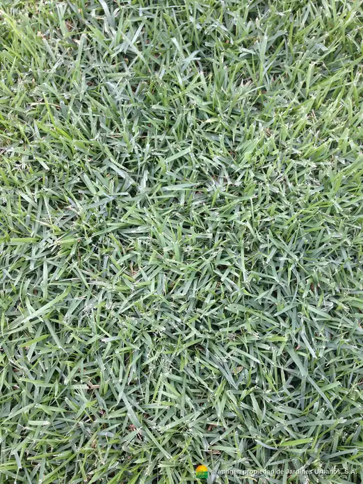
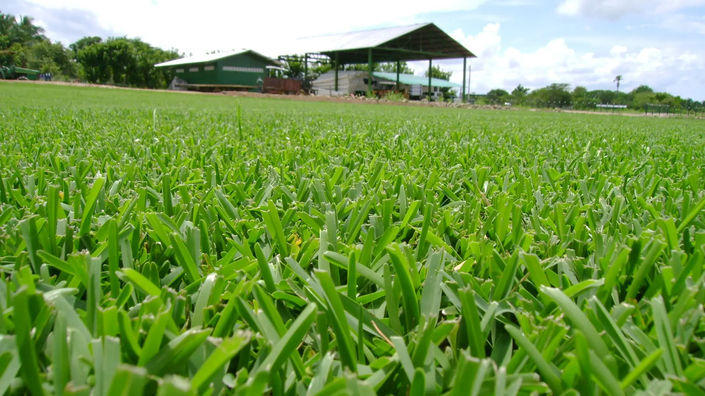
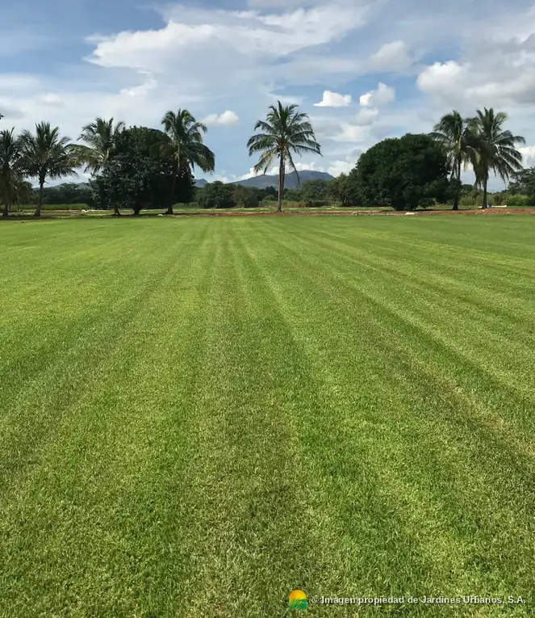
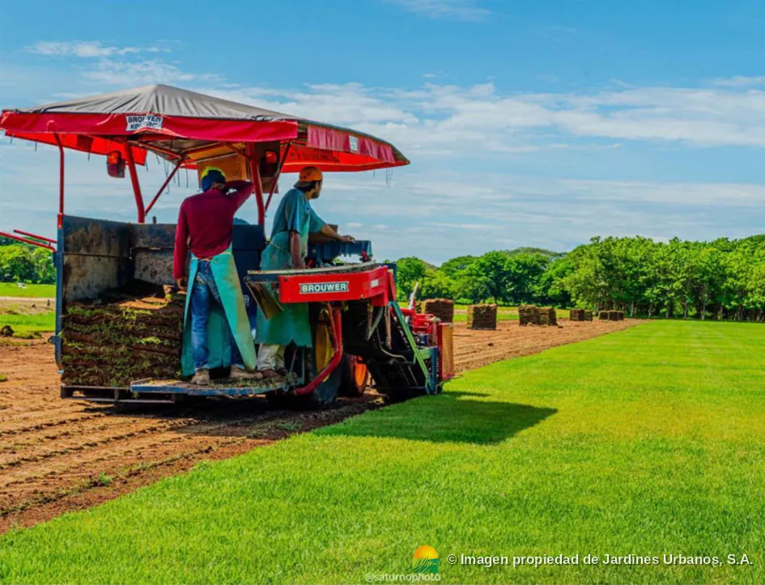

Gramas naturales
Zoysia Toro, Zoysia Japónica y San Agustín en rollos, cosechados el mismo día del despacho.
Gramas para tu jardín →
Grama en rollos, hidrosiembra y vivero desde nuestras fincas en Río Grande, Coclé, para todo Panamá.

Zoysia Toro, Zoysia Japónica y San Agustín en rollos, cosechados el mismo día del despacho.
Gramas para tu jardín →
Grama y palmas para urbanizaciones, hoteles y áreas verdes, con despacho en tarimas.
Proyectos comerciales →
Control de erosión en taludes de obras viales y urbanizaciones, con equipo propio.
Servicios de hidrosiembra →
Palmas ornamentales, árboles en cepellón y plantas tropicales aclimatadas en Coclé.
Ver el catálogo →Arrastra el deslizador para comparar el antes y el después.

De arcilla expuesta sujeta a deslaves por lluvias intensas en Panamá a una manta radicular continua con 98% de reducción de escorrentía en 5 semanas.


Suelo desnudo compactado tras construcción transformado en tapete de Zoysia Toro resistente al pisoteo y juego familiar en solo 2 semanas.
Algunas de las especies que cultivamos en Río Grande, Coclé.
Calcula los m² y las tarimas de tu proyecto en menos de un minuto. Sumamos 5% extra para cortes y bordes.
Jardines Urbanos, S.A. nació en 1999 como una empresa familiar panameña con raíces profundas en Río Grande, Coclé. Nuestro mayor activo es nuestra gente: agrónomos, operadores y colaboradores de campo que cultivan cada metro de grama y cada ejemplar del vivero con dedicación artesanal.




Lunes a viernes de 7:30 a.m. a 4:30 p.m. · Sábados de 8:00 a.m. a 12:00 m.d. · Más formas de contacto